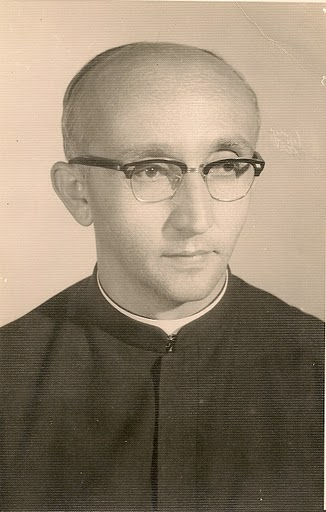

Padre Paulo de Sá Gurgel: O Educador Inabalável e Fotógrafo de Almas
Nascido em 2 de outubro de 1920, em Ipaumirim, Ceará, Padre Paulo de Sá Gurgel veio ao mundo sob os cuidados de Octávio Gurgel e Maria das Dores de Sá Gurgel. Desde cedo, seu caminho já parecia predestinado a unir fé e conhecimento. Iniciou seus estudos no Cedro, Ceará, e depois os prosseguiu em Fortaleza, onde seu desejo de servir a Deus se intensificou. Em 1934, ingressou no Seminário Salvatoriano de Jundiaí, São Paulo, onde sua jornada religiosa tomaria forma. O jovem Paulo, então com apenas 20 anos, consagrou-se a Deus no dia 2 de fevereiro de 1941, professando seus votos religiosos após o noviciado. Seu fervor o conduziu a estudar Filosofia e parte da Teologia em São Paulo. Mais tarde, em uma busca pelo aprofundamento espiritual e intelectual, ele se dirigiu a Roma, onde se formou em Direito Canônico pela prestigiada Universidade Gregoriana e foi ordenado sacerdote em 18 de março de 1946.
De volta ao Brasil em 1948, Padre Paulo lançou-se em uma de suas maiores missões: a educação. Sua sabedoria e dedicação logo o tornaram uma figura proeminente nas instituições em que passou. Como professor no Seminário Maior Salvatoriano e no Ginásio Nossa Senhora Aparecida, em São Paulo, ele moldou gerações de jovens com sua paixão pelo ensino. Sua vocação como educador não parou por aí. Fundador, diretor e professor do Colégio Divino Salvador, em Jundiaí, e também diretor e professor do Colégio Santo Antônio, em Barbalha, Ceará, Padre Paulo era conhecido por acumular funções com maestria. Além de suas obrigações como diretor, ele lecionava disciplinas como Latim, Português, Inglês e até mesmo aquelas cujos professores, por qualquer razão, não pudessem comparecer. Ele jamais transigiu com sua fé, mantendo uma ortodoxia religiosa firme e inabalável, ao mesmo tempo em que implementava inovações educacionais.
Tive a sorte de conhecer o Padre Paulo de perto. Além de ser diretor do Colégio Santo Antônio, onde eu estudava, ele era também amigo da minha família. Era impossível esquecer o seu espirro, que se tornava quase uma marca registrada. Certa vez, quando ainda era pequeno, lembro de estar voltando da casa da minha avó no sítio Rua Nova, em Barbalha, com meus pais e meu tio-avô Vicente Paulo de Sousa. No caminho, nos deparamos com o Padre Paulo caído na estrada que liga o Caldas ao centro de Barbalha, após um acidente com sua motocicleta. Nós o socorremos prontamente, e eu tive a missão de correr até a Igreja Matriz para avisar o pároco da época, Padre Renato Simoneto. Anos depois, em 2006, tive o prazer de revisitá-lo, já aposentado, em uma casa ao lado da Matriz. Naquela época, ele já não exercia mais suas funções de sacerdote, mas sua presença e carisma permaneciam tão fortes quanto antes.
Padre Paulo era um educador diferenciado, sempre à frente de seu tempo. Incorporou métodos pedagógicos modernos no sistema de ensino salvatoriano, promovendo o esporte como parte essencial do desenvolvimento dos alunos. Sua gestão foi marcada pela ênfase no envolvimento dos estudantes em atividades extracurriculares, fazendo do colégio um espaço de convívio nos fins de semana. Mas, além do ensino acadêmico, seu verdadeiro legado foi a formação moral e espiritual de seus alunos. Ele incutiu em cada um deles princípios que transcendiam as salas de aula, moldando caráteres e inspirando vidas.
Um homem de muitos talentos, Padre Paulo também era apaixonado pela fotografia. Dono de uma visão artística apurada, manteve um laboratório fotográfico e deixou um vasto acervo de imagens que documentavam a vida dos Salvatorianos em Jundiaí, Barbalha e até Roma. Suas lentes capturaram o cotidiano das capelas sob responsabilidade dos Salvatorianos, locais onde ele frequentemente celebrava missas e atendia os fiéis. Sua fiel companheira nessa jornada era sua motocicleta, presente de um pai de um ex-aluno, com a qual ele percorria as estradas do interior, sempre com sua câmera a tiracolo. Durante as décadas de 1960 a 1990, suas fotos se tornaram registros documentais inestimáveis da cidade de Barbalha e de sua própria missão pastoral.
Fluente em cinco idiomas — Latim, Espanhol, Inglês, Francês e Alemão — Padre Paulo não apenas ensinava, mas também escrevia. Suas contribuições eram ouvidas tanto em emissoras de rádio quanto lidas nas páginas de jornais, além de sua obra escrita “Impressões de Viagem”, onde relatava suas experiências pelo mundo.
Sua presença na vida de seus alunos foi tão marcante que muitos devem a ele não apenas sua educação, mas sua formação como seres humanos íntegros. Ele os acompanhava além dos muros escolares, criando uma conexão duradoura. Essa legião de jovens se lembrava de Padre Paulo como o educador que, com firmeza, mas sempre com alegria, os guiou tanto pelos caminhos do saber quanto pelos valores morais e espirituais.
Padre Paulo de Sá Gurgel partiu deste mundo no dia 3 de setembro de 2009, em Barbalha, deixando uma lacuna profunda na vida daqueles que tiveram a sorte de cruzar seu caminho. Seu funeral, realizado na Igreja Matriz de Santo Antônio, foi marcado por grande comoção. O município decretou ponto facultativo em sua homenagem, e a cerimônia contou com a presença de diversos sacerdotes e do bispo local, que celebraram sua vida e obra. Para seus ex-alunos, a despedida foi um momento de dor, mas também de gratidão. O sacerdote que guiou tantas vidas e capturou tantas memórias com sua câmera descansou, mas seu legado, tanto como educador quanto como homem de fé, continua vivo naqueles que o conheceram.
Sua vida foi um testemunho de dedicação à educação, à fé e ao amor pela humanidade. Padre Paulo de Sá Gurgel, o sacerdote, o professor e o fotógrafo de almas, deixou um legado que permanecerá por gerações, registrado não apenas nas mentes e corações de seus alunos, mas também nas imagens que ele imortalizou ao longo de sua extraordinária jornada.